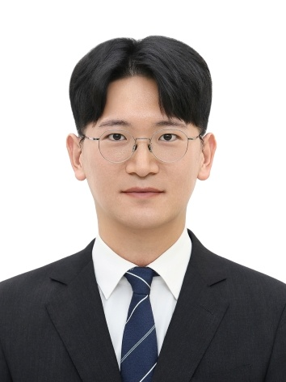

Team
Professor 교수

Junyong Bae, Ph.D. 배준용
Assistant Professor
GAST-Mechanical Engineering, Changwon National University
Dr. Bae received a Ph.D. in Nuclear Engineering from UNIST in 2025, worked as a postdoctoral researcher at UNIST and at the Korea Atomic Energy Research Institute (KAERI), and joined Changwon National University in October 2026.
His research interests include risk assessment, digital twins, and operator support systems for safer and more economical operation of nuclear power plants.
Experience & Education 경력 및 학력
CWNU · KAERI · UNISTProfessional Experience 경력
Assistant Professor
GAST-Mechanical Engineering, Changwon National University (CWNU)
Postdoctoral Researcher
Risk Assessment Research Division, Korea Atomic Energy Research Institute (KAERI)
Advisor: Hyeonmin Kim, Ph.D.
Postdoctoral Researcher
Nuclear Safety Assessment and Plant HMI Evolution Lab, UNIST
Advisor: Prof. Seung Jun Lee
Education 학력
Ph.D. in Nuclear Engineering
Ulsan National Institute of Science and Technology (UNIST)
Dissertation: Deep Learning-based Optimized Simulation and Consequence Estimation with Neural Network Uncertainty for Dynamic Risk Assessment of Nuclear Power Plants. Advisor: Prof. Seung Jun Lee.
B.S. in Nuclear Science and Engineering
UNIST — minor in Electrical Engineering
Graduated cum laude.
Honors & Awards 수상
Best Paper Award, Nuclear Engineering and Technology, Korean Nuclear Society
Grand Prize, Best Oral Presentation Awards, ASRAM 2025
Outstanding Doctoral Dissertation Award, Department of Nuclear Engineering, UNIST
Best Paper Award, 2024 KNS Fall Conference
Best Student Paper Award, ISOFIC 2024
Best Paper Award, 2023 KNS Fall Conference
KNS Doosan Enerbility Scholarship
KNS Park Chang-kyu PSA Student Paper Award
Excellence Award, Nuclear–AI Convergence Case Study Presentation
Best Paper Award, 2018 KNS Student Conference
National Scholarship for Science and Engineering